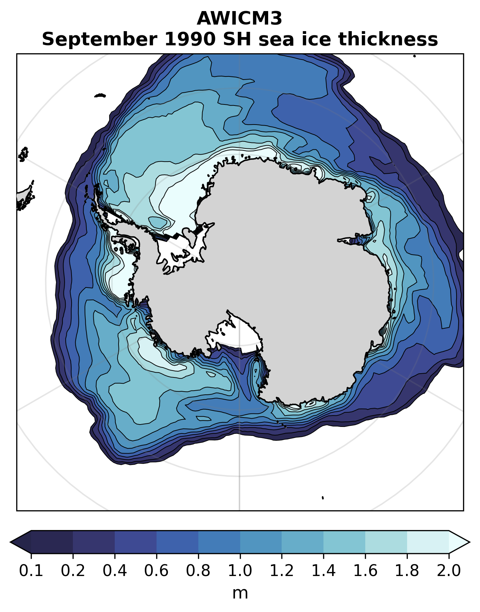
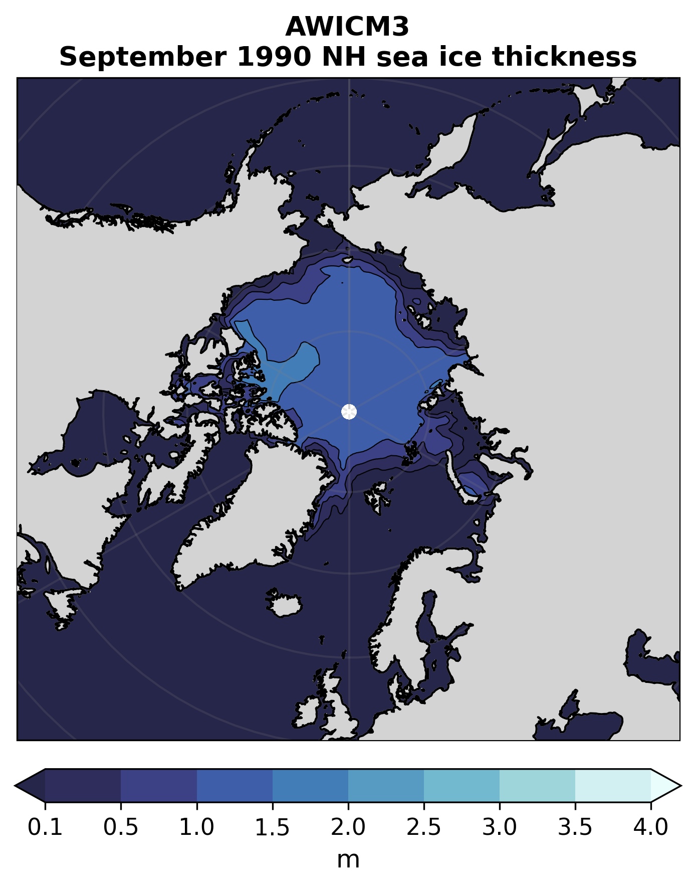
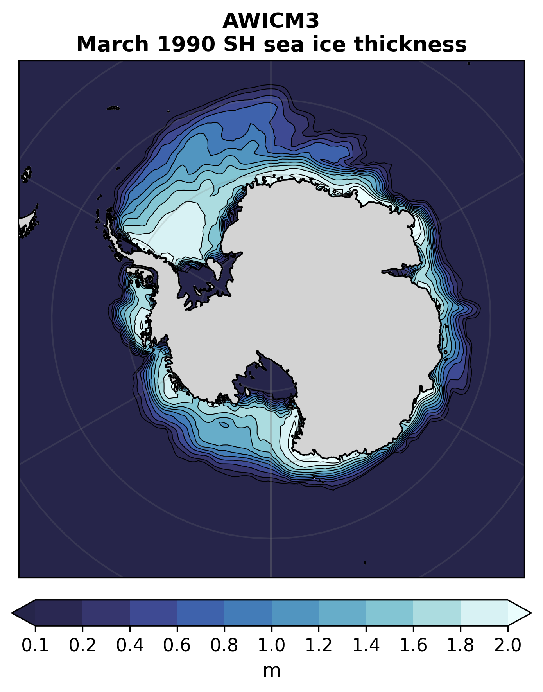
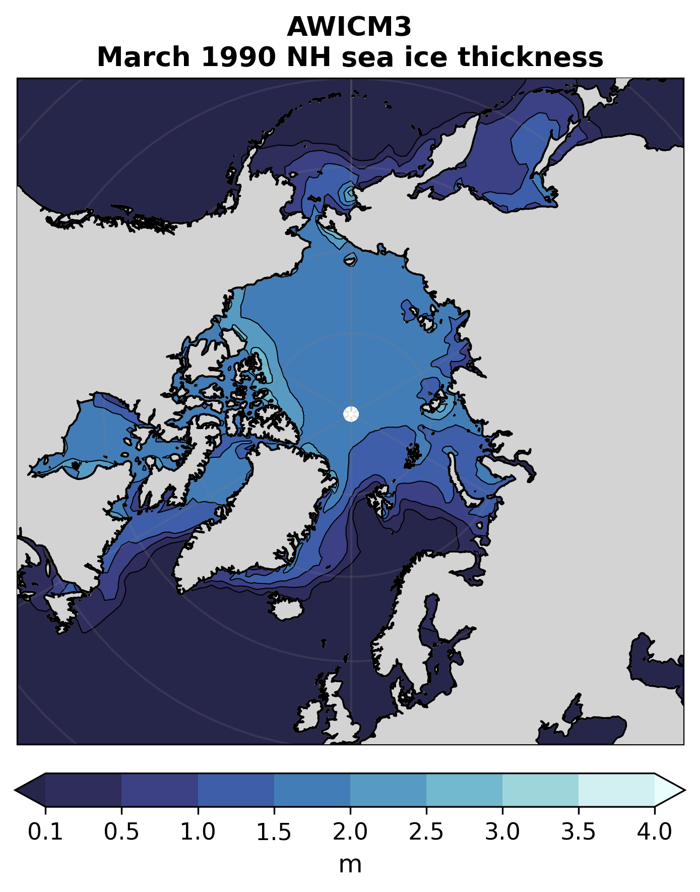
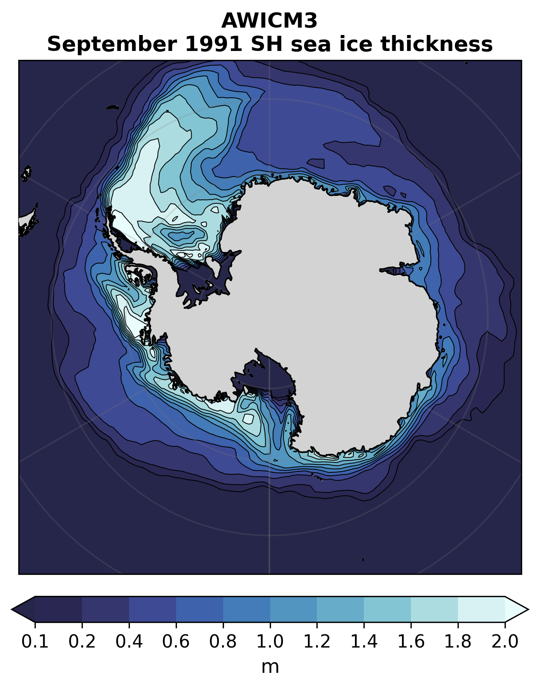
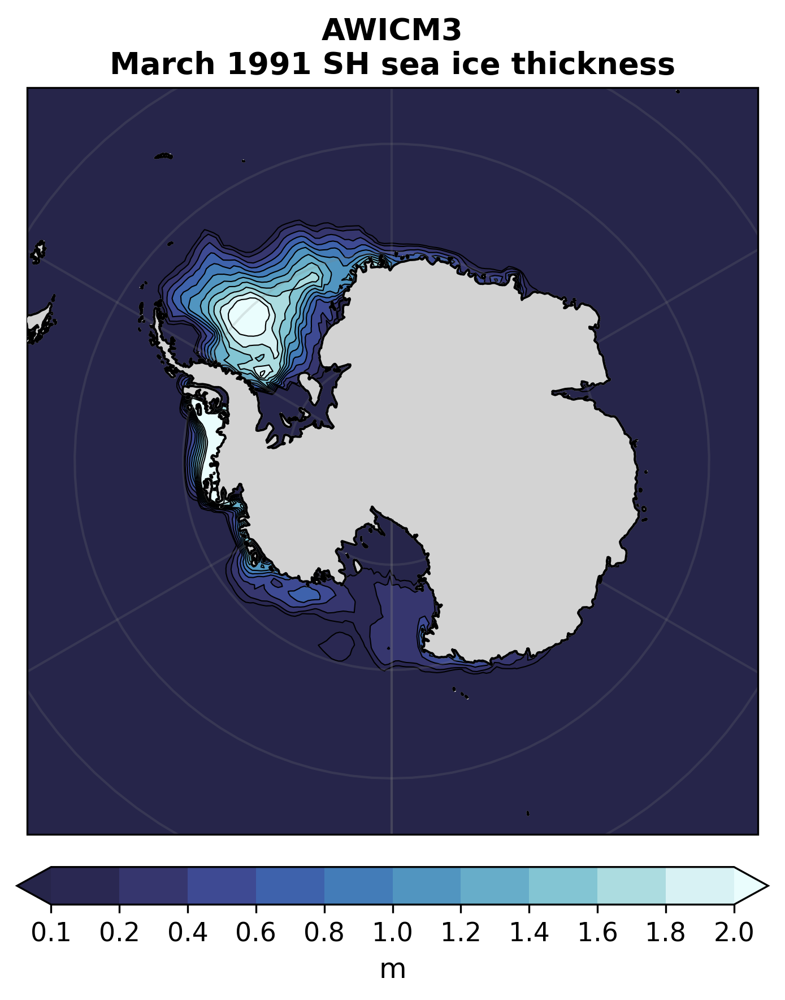
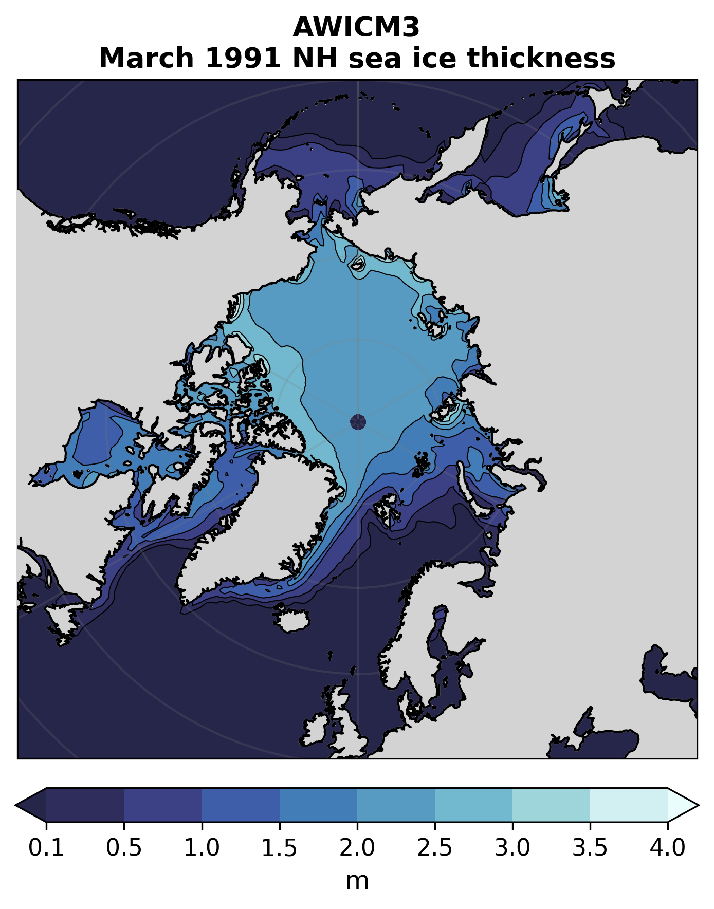

Alle generierten Abbildungen
Notebook: ./notebooks/part11_zonal_plots.ipynb
sea ice thickness plot 0

sea ice thickness plot 1

sea ice thickness plot 2

sea ice thickness plot 3

sea ice thickness plot 4

sea ice thickness plot 6

sea ice thickness plot 7
